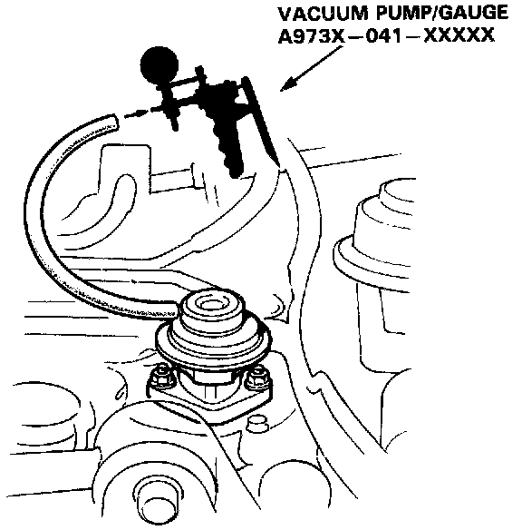

EGR Valve: Testing and Inspection

1. With the engine at normal operating temperature, start the engine and allow it to idle.
2. Disconnect the vacuum hose from the Exhaust Gas Recirculation (EGR) valve and connect a vacuum pump to the valve. See Image.
3. Apply 200 mm.Hg (8 in. Hg) of vacuum to the EGR valve. The vacuum should remain steady and the engine should run very rough or die.
a. If the vacuum does not hold steady and the engine does not run rough, replace the EGR valve and re-test.
b. If the vacuum holds steady but the engine does not run rough, remove the EGR valve and check all passages in the valve, intake, and/or exhaust manifold for blockage. Clean out blocked passages and re-test.